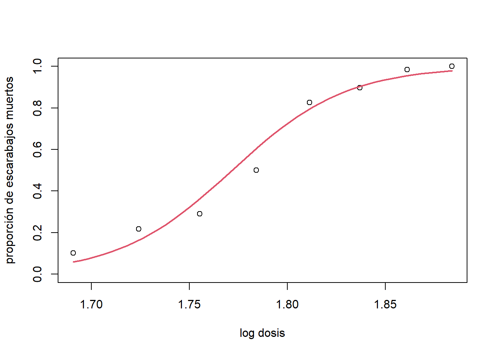
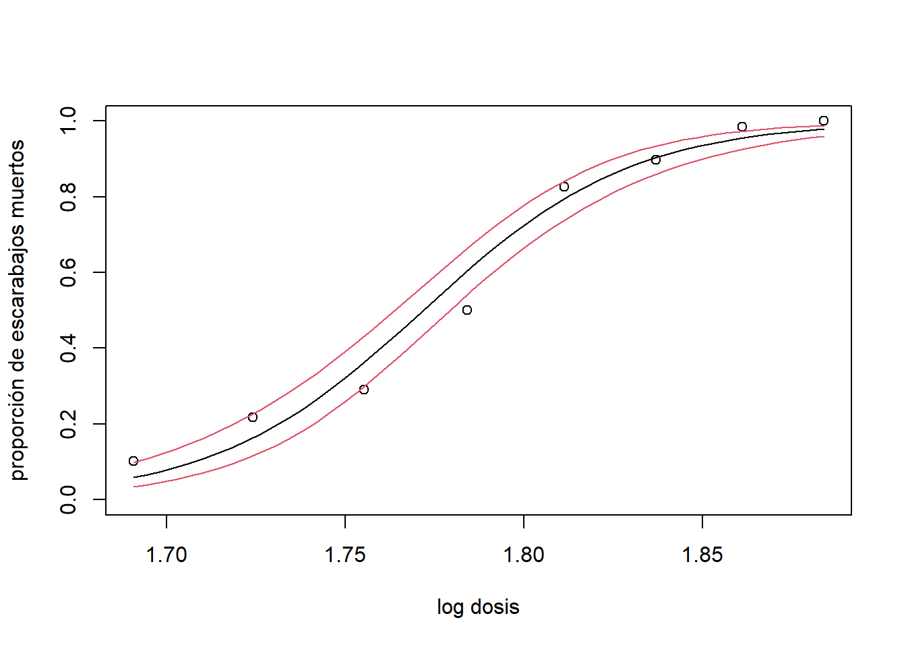

Capítulo 6 Modelo lineal generalizado
6.1 Introducción
6.1.1 Modelos lineales
Modelo lineal:
\[ y_{i}=\boldsymbol x_{i}^{'}\boldsymbol \beta+\epsilon, \quad \text{donde}\quad \epsilon \sim N(\boldsymbol 0,\sigma^2\boldsymbol I) \]
Lo que implica que \(E(y_{i}|\boldsymbol x_{i})=\boldsymbol x_{i}\boldsymbol \beta\) y \(V(y_{i}|\boldsymbol x_{i})=\sigma^2\)
En algunos casos es difícil que se cumplan esas propiedades (incluso luego de hacer transformaciones).
Si la variable respuesta \(Y\) solo puede tomar dos valores \((y_{i}\in\{0,1\})\) no podríamos representar \(E(y|\boldsymbol x)\) como una función lineal.
Los modelos lineales generalizados (GLM) son una clase de modelos que permite modelar variables aleatorias con distribución de probabilidad diferentes a la normal.
6.1.2 Mortalidad de escarabajos
Número de escarabajos muertos después de cinco horas de exposición a disulfuro de carbono gaseoso \((CS2mgl^{-1})\) en diversas concentraciones:
| logdose | n | dead |
|---|---|---|
| 1.6907 | 59 | 6 |
| 1.7242 | 60 | 13 |
| 1.7552 | 62 | 18 |
| 1.7842 | 56 | 28 |
| 1.8113 | 63 | 52 |
| 1.8369 | 59 | 53 |
| 1.8610 | 62 | 61 |
| 1.8839 | 60 | 60 |
¿Hay una relación entre la dosis y la mortalidad de escarabajos?
plot(logdose,dead/n,xlab='log dosis',ylab='proporción de muertos',ylim=c(0,1),pch=16)Figure 6.1: Datos escarabajos. Proporción de muerte vs log dosis.
6.1.3 Modelo logístico
Definiendo \(y_{i}=\sum_{i=1}^ny_{ij}/n_{i}\) (la proporción de éxitos en \(n_i\) ensayos independientes), tenemos que:
\[ n_{i}y_{i}\sim binomial(n_{i},\pi_{i}), \quad i=1,...,n, \quad \text{donde} \quad \pi_{i}=g(\boldsymbol x_{i},\boldsymbol \beta). \]
Entonces: \(E(y_{i}|\boldsymbol x_{i})=\pi_{i}\) y \(V(y_{i}|\boldsymbol x_{i})=\pi_{i}(1-\pi_{i})/n_{i}\).
El modelo ligístico es un GLM y asume que:
\[ \pi_{i}=g^{-1}(\boldsymbol x_{i},\boldsymbol \beta)=\frac{exp(\boldsymbol x_{i}^{'}\boldsymbol \beta)}{1+exp(\boldsymbol x_{i}^{'}\boldsymbol \beta)}=\frac{1}{1+exp(-\boldsymbol x_{i}^{'}\boldsymbol \beta)} \]
Por lo que: \(g(\pi_{i})=log(\frac{\pi_{i}}{1-\pi_{i}})=\boldsymbol x_{i}^{'}\boldsymbol \beta\) (función logit).
Figure 6.2: Función logística
6.1.4 ataques de epilepsia
Ensayo clínico para evaluar el impacto de progabida sobre las crisis
epilépticas (data(epilepsy) de la librería HSAUR2).
Datos:
age: edad del paciente.base: número de ataques epilépticos (x 8 semanas) antes del ensayo.treatment: tratamiento (placebo, progabida).seizure.rate(variable respuesta): número de ataques epilépticos (x dos semanas) luego de 8 semanas.
epilepsy=subset(epilepsy, period==4)#selecionamos la semana 4
par(mfrow=c(1,3))
plot(seizure.rate~age, col=treatment, pch=16, data=epilepsy, xlab="Edad",
ylab = "Num. ataques epiléptico(4ta semana)")
plot(seizure.rate~base, col=treatment, pch=16,data=epilepsy,
xlab="Num. ataques epiléptico(pre tratamiento)",
ylab = "Num. ataques epiléptico(4ta semana)")
boxplot(seizure.rate~treatment,data=epilepsy, xlab = "Tratamiento",
ylab = "Num. ataques epiléptico(4ta semana)")Figure 6.3: Datos epilepsia
6.1.4.1 Modelo poisson
Aquí podemos suponer que:
\[ y_{i}\sim Poisson(\lambda_{i}), \quad i=1,...,n,\quad \text{donde} \quad \lambda_{i}=g(\boldsymbol x_{i},\boldsymbol \beta). \]
Entonces:\(E(y_{i}|\boldsymbol x_{i})=V(y_{i}|\boldsymbol x_{i})=\lambda_{i}).\)
El modelo Pooisson es un GLM y asume que:
\[ \lambda_{i}=g^{-1}(\boldsymbol x_{i},\boldsymbol \beta)=exp(\boldsymbol x_{i}^{'}\boldsymbol \beta). \]
Por lo que: \(g(\lambda_{i})=log\lambda_{i}=\boldsymbol x_{i}^{'}\boldsymbol \beta\) (función log).
6.2 Modelo lineal generalizado (GLM)
Un modelo lineal generalizado (GLM) tiene tres componentes:
Componente aleatorio: variable respuesta \(Y\) y su distribución de probabilidad.
Predictor lineal:
\[ \eta=\boldsymbol x^{'}\boldsymbol \beta, \]
donde \(\boldsymbol \beta\) es un vector de parámetros y \(\boldsymbol x\) un vector de covariables.
- Función de enlace: una función g que conecta \(E(Y)\) con el predictor lineal,
\[ g[E(Y|\boldsymbol x)]=\boldsymbol x^{'}\boldsymbol \beta \]
6.2.1 Componente aleatorio
Observaciones independientes \((y_{i},...,y_{n})\) de una variable aleatoria \(Y\) cuya distribución de probabilidad pertenece a la familia exponencial.
Restringir un GLM a la familia exponencial permite tener expresiones generales para:
La función de verosimilitud y funciones score.
distribución asintótica de los estimadores de los parámetros del modelo
Algoritmo para ajustar el modelo.
6.2.2 Predictor lineal
Para cada observación \(i\),
\[ \boldsymbol x_{i}=(1,x_{i1},...,x_{i(p-1)})^{'}, \]
donde \(x_{ij}\) es la observación \(i\) de la covariable \(j,\quad j=1,...,p-1\).
Predictor lineal es una combinación lineal de las covariables:
\[ \eta_{i}=\beta_{0}+\sum_{j=1}^{p-1}\beta_{j}x_{ij}=\boldsymbol x_{i}^{'}\boldsymbol \beta \]
Un GLM asume que las covariables no son aleatorias.
6.2.3 Función de enlace
Sea:
\[ E(Y|\boldsymbol x_{i})=\mu_{i}, \quad i=1,...,n. \]
En algunas distribuciones,\(\mu_{i}\) está acotada en un intervalo. Por ejemplo, en la distribución binomial, \(0\leq \pi_{i}\leq 1\), o en la Poisson, \(\lambda_{i}>0\).
El GLM conecta \(\mu_{i}\) con \(\eta_{i}\):
\[ \mu_{i}=g^{-1}(\eta_{i})=g^{-1}(\boldsymbol x_{i}^{'}\boldsymbol \beta) \]
La función \(g(\cdot)\) es monótona y diferenciable.
\(g(\cdot)\) esta determinada generalmente por la distribución que se asume para \(Y\).
6.2.4 Ejemplos de GLM
Algunos ejemplos de GLM:
| Tipo de respuesta | Distribución | función de enlace | Modelo |
|---|---|---|---|
| Continuo | Normal | Identidad | Modelo lineal |
| Binaria | Bernoulli | Logit | Modelo logístico |
| Conteo | Poisson | Log | Modelo Poisson |
Otros ejemplos son beta , gamma, exponencial, …
hay extensiones del GLM para distribuciones:
binomial negativa para conteo con sobredispersión.
beta-binomial para ensayos Bernoulli correlacionados (sobredispersión).
multinomial para variables nominales (ordinales) con más de dos categorías
Weibull para tiempos de falla.
6.2.5 Ajuste de un GLM
El proceso de ajustar un GLM incluye:
Especificación del modelo.Definición del componente aleatorio, predictor lineal y función de enlace.
Estimación de los parámetros del modelo.
Evaluación del modelo. ¿El modelo describe bien los datos?
Inferencia. Intervalos de confianza, pruebas de hipótesis e interpretación de los resultados.
6.2.6 Familia exponencial
La distribución de probabilidad de una variable aleatoria Y pertenece a la familia exponencial si la función de densidad (o masa) de Y toma esta forma:
\[ f(y;\theta,\phi)exp\{[y\theta-b(\theta)]/a(\phi)+c(y,\phi)\} \]
donde:
- \(\theta\) es el parámetro natural.
- \(\phi>0\) parámetro de dispersión.
Además se tiene que:
\[ E[Y]=b^{'}(\theta) \quad \text{y} \quad V[Y]=b^{''}(\theta)a(\phi). \]
6.2.6.1 Ejemplo
La distribución Poisson:
\[ f(y;\mu)=\frac{\mu^yexp(-\mu)}{y!}, \quad \theta>0. \]
se puede re-escribir como:
\[ f(y;\mu)=exp(-\mu+ylog\mu-logy!). \]
Por lo tanto:
\(\theta=log\mu, \quad b(\theta)=exp(\theta)\).
\(a(\phi)=1\) y \(c(y,\phi)=-lny!\).
La distribución normal:
\[ f(y;\mu,\sigma^2)=\frac{1}{\sqrt{2\pi\sigma}}exp\begin{bmatrix}-\frac{(y-\mu )^2}{2\sigma^2}\end{bmatrix} \]
Se puede re-escribir como:
\[ f(y;\mu,\sigma^2)=exp[\frac{y\mu-\frac{1}{2}\mu^2}{\sigma^2}-\frac{1}{2}log(2\pi\sigma^2)-\frac{y^2}{2\sigma^2}] \]
donde:
\(\theta=\mu, \quad b(\theta)=\frac{1}{2}\theta^2\).
\(a(\phi)=\sigma^2\) y \(c(y,\phi)=-\frac{1}{2}log(2\pi\sigma^2)-\frac{y^2}{2\sigma^2}\).
La distribución binomial:
\[ f(y;\pi)=\left(\begin{array}{c}n\\y\end{array}\right)\pi^y(1-\pi)^{n-y}. \]
se puede re-escribir como:
\[ f(y;\pi)=exp\left\{y[log\pi-log(1-\pi)]+nlog(1-\pi)+log\left(\begin{array}{c}n\\y\end{array}\right)\right\} \] donde:
\(\theta=log(\frac{\pi}{1-\pi}), \quad b(\theta)=-nlog[1+exp(\theta)]\).
\(c(\phi)=1\) y \(d(y,\phi)=log\left(\begin{array}{c}n\\y\end{array}\right)\).
Familia exponencial
| Distribución | \(\theta\) | \(a(\phi)\) | \(b(\theta)\) | \(c(y,\phi)\) |
|---|---|---|---|---|
| Normal | \(\mu\) | \(\sigma^2\) | \(\frac{1}{2}\mu^2\) | \(-\frac{1}{2}log(2\pi\sigma^2)-\frac{y^2}{2\sigma^2}\) |
| Binomial | \(log(\frac{\pi}{1-\pi})\) | \(\frac{1}{n}\) | \(log(1+exp\theta)\) | \(log\left(\begin{array}{c}n \\ y\end{array}\right)\) |
| Poisson | \(log(\lambda)\) | \(1\) | \(exp\lambda\) | \(-log(y!)\) |
Relación media-varianza:
| Distribución | \(v(\mu)\) |
|---|---|
| Normal | \(\sigma^2\) |
| Binomial | \(\mu(1-\mu)/n\) |
| Poisson | \(\mu\) |
6.2.6.2 Estimador de máxima verosimilitud
Modelo \(Y\sim f(y,\boldsymbol \theta)\).
Estamos interesados en estimar \(\boldsymbol \theta\).
Para ello tomamos una muestra independiente \((y_{1},y_{2},...,y_{n}).\)
Si las observaciones son independientes, la función de verosimilitud es:
\[ L(\boldsymbol \theta)=\prod_{i=1}^nf(y_{i};\boldsymbol \theta). \]
La función de log-verosimilitud:
\[ ℓ(\boldsymbol \theta)=\sum_{i=1}^nlnf(y_{i},\boldsymbol \theta). \]
El objetivo es encontrar el \(\hat{\boldsymbol \theta}\) que maximiza \(L(\boldsymbol \theta)\) (o \(ℓ(\boldsymbol \theta)\)).
\(\hat{\boldsymbol \theta}\) se obtiene calculando las derivadas de \(ℓ(\boldsymbol \theta)\) con respecto a cada elemento de \(\boldsymbol \theta\) y resolviendo las ecuaciones score:
\[ U(\boldsymbol \theta)=\frac{\partial ℓ(\boldsymbol \theta)}{\partial\boldsymbol \theta}=\boldsymbol 0. \]
s necesario verificar si la solución corresponde a un máximo de \(ℓ(\boldsymbol \theta)\). Se requiere que la matriz de segundas derivadas (matriz Hessiana):
\[ H(\boldsymbol \theta)=\frac{\partial^2ℓ(\boldsymbol \theta)}{\partial\boldsymbol \theta\partial\boldsymbol \theta^{'}}, \]
evaluada en \(\boldsymbol \theta=\hat{\boldsymbol \theta}\), sea negativa definida.
6.2.6.3 Propiedades asintóticas de los MLEs
\(\hat{\boldsymbol \theta}\) es asintóticamente \((n\to \infty)\) insesgado. Esto es, \(E(\hat{\boldsymbol \theta})=\boldsymbol \theta\).
La varianza asintótica \((n\to \infty)\) de \(\hat{\boldsymbol \theta}\) se calcula como la inversa de la matriz de información:
\[ V(\hat{\boldsymbol \theta})=I(\boldsymbol \theta)^{-1},\quad \text{donde} \quad I(\boldsymbol \theta)=-E[H(\boldsymbol \theta)] \] Teorema de Cramer-Rao: La varianza de cualquier estimador es insesgado de un parámetro \(\boldsymbol \theta\) debe:
\[ V(\hat{\boldsymbol \theta})\geq-E[H(\boldsymbol \theta)]^{-1}. \]
Por lo cual, es MLE es eficiente.
Otras propiedades importantes:
Asintoticamente normal:\(\hat{\boldsymbol \theta}\sim N[\boldsymbol \theta,I(\boldsymbol \theta)^{-1}]\)
Invarianza:si \(\hat{\boldsymbol \theta}\) es el MLE de \(\boldsymbol \theta\), entonces \(g(\hat{\boldsymbol \theta})\) es el MLE de \(g(\boldsymbol \theta)\)
6.2.6.4 Métodos iterativos de maximización
Algoritmo de Newton-Raphson:
Considere una expansión de series de Taylor de orden 1 para la función score, alrededor de \(\boldsymbol \theta=\boldsymbol \theta^{(t)}\):
\[ U(\boldsymbol \theta)\approx U(\boldsymbol \theta^{(t)})+H(\boldsymbol \theta^{(t)})+(\boldsymbol \theta-\boldsymbol \theta^{(t)}) \]
Igualando a cero:
\[ U(\boldsymbol \theta^{(t)})+H(\boldsymbol \theta^{(t)})+(\boldsymbol \theta-\boldsymbol \theta^{(t)})=0 \]
Ahora encontramos la solución para \(\hat{\boldsymbol \theta^{(t+1)}}\):
\[ \boldsymbol \theta^{(t+1)}=\boldsymbol \theta^{t}-H(\boldsymbol \theta^{t})^{-1}U(\boldsymbol \theta^{t}). \]
Podemos reemplazar \(H(\boldsymbol \theta)\) por \(I(\boldsymbol \theta)\) (algoritmo Fisher’s scoring).
6.3 GLM
El modelo lineal generalizado (GLM) asume que:
\[ f(y_{i};\theta_{i},\phi)=exp\left\{\frac{y_{i}\theta_{i}-b(\theta_{i})}{a(\phi)} +c(y_{i},\phi)\right\}, \]
donde \(\phi>0\). Además, \(E(y_{i})=b'(\theta_{i})\) y \(V(y_{i})=b''(\theta_{i})a(\phi).\)
El predictor lineal \(\eta_{i}=\boldsymbol x'_{i}\boldsymbol \beta\) se relaciona con \(\mu_{i}\) a través la función de enlace:
\[ \eta_{i}=g(\mu_{i}). \]
La función de enlace \(g(\cdot)\) que transforma \(\mu_{i}\) en el parámetro natural \(\theta_{i}\) es llamada función de enlace canónica.
Distribución normal: \(\eta_{i}=\mu_{i}\) (identidad), por lo tanto:
\[ \mu_{i}=\eta_{i} \]
Distribución Poisson:\(\eta_{i}=log\mu_{i}\) (logarítmica), por lo tanto:
\[ \mu_{i}=exp(\eta_{i}) \]
Distribución binomial:\(\eta_{i}=log(\frac{\pi_{i}}{1-\pi_{i}})\) (logit), por lo tanto:
\[ \pi_{i}=\frac{exp(\eta_{i})}{1+exp(\eta_{i})} \]
6.3.1 Mortalidad de escarabajos
Variable respuesta \(y_{i}=\sum_{j=1}^{n_{i}}y_{ij}/n{i}\): proporción de escarabajos muertos.
Distribución de probabilidad binomial:
\[ f(n_{i}y_{i};\pi_{i})= \begin{pmatrix} n_{i}\\y_{i} \end{pmatrix}\pi_{i}^{y_{i}}(1-\pi_{i})^{(n_{i}-y_{i})}. \]
Función de enlace:
\[ log\left(\frac{\pi_{i}}{1-\pi_{i}}\right)=\beta_{0}+\beta_{1}log\text{dosis}_{i}. \]
6.3.2 Ataques epilépticos
Variable respuesta \(y_{i}\): número de ataques epilépticos.
Distribución de probabilidad Poisson:
\[ f(y_{i};\lambda_{i})=\frac{\lambda_{i}^{y_{i}}exp(-\lambda_{i})}{y_{i}!}. \]
Función de enlace:
\[ log\lambda_{i}=\beta_{0}+\beta_{1}\text{treat}_{i}+\beta_{2}\text{base}_{i}+\beta_{3}\text{base}_{i}\text{treat}_{i} \]
6.3.3 MLE de \(\boldsymbol \beta\)
Función de log-verosimilitud:
\[ ℓ(\boldsymbol \beta)=\sum_{i=1}^{n}ℓ_{i}(\boldsymbol \beta)=\sum_{i=1}^{n}logf(y_{i};\theta_{i},\phi)=\sum_{i=1}^{n}\{\frac{y_{i}\theta_{i}-b(\theta_{i})}{a(\phi)}+c(y_{i},\phi)\} \]
En un GLM tenemos que \(\eta_{i}=\boldsymbol x_{i}'\boldsymbol \beta=g(\mu_{i})\).
Las funciones score están definidas como:
\[ U(\beta_{j})=\sum_{i=1}^{n}\frac{(y_{i}-\mu_{i})x_{ij}}{V(y_{i})}\frac{\partial\mu_{i}}{\partial\eta_{i}}=0, \quad \text{para} \quad j=0,...,k. \]
Dado que las funciones score son no-lineales, es necesario estimar \(\boldsymbol \beta\) iterativamente usando el algoritmo de Newton-Raphson.
En forma matricial, tenemos:
Función score:\(U(\boldsymbol \beta)=\boldsymbol X'\boldsymbol D\boldsymbol V^{-1}(\boldsymbol y-\boldsymbol \mu)\),
Función Hessiana: \(H(\boldsymbol \beta)=\boldsymbol I(\boldsymbol \beta)=\boldsymbol X'\boldsymbol W\boldsymbol X\)
donde:
\(\boldsymbol V\) es una matriz diagonal con valores \(v_{ii}=V(y_{i})\) en la diagonal.
\(\boldsymbol D\) es una matriz diagonal con valores \(d_{ii}=\frac{\partial\mu_{i}}{\partial\eta_{i}}\).
\(\boldsymbol W\) es una matriz diagonal con \(w_{ii}=\frac{(\partial\mu_{i}/\partial\eta_{i})^2}{V(y_{i})}\).
6.3.3.1 Estimador de máxima verosimilitud
Utilizando el algoritmo de Newton-Raphson (Fisher’s scoring):
\[ \boldsymbol \beta^{(t+1)}=\boldsymbol \beta^{(t)}+[\boldsymbol I(\boldsymbol \beta^{(t)})]^{-1}U(\boldsymbol \beta^{(t)}). \]
Equivalentemente, utilizando el método de mínimos cuadrados iterativamente reponderados:
\[ \boldsymbol \beta^{(t+1)}=(\boldsymbol X'\boldsymbol W^{(t)}\boldsymbol X)^{-1}\boldsymbol X'\boldsymbol W^{(t)}z^{(t)} \]
donde, los elementos de \(z^{(t)}\) son:
\[ z_{i}^{(t)}=\boldsymbol x_{i}'\boldsymbol \beta^{(t)}+(y_{i}-\mu_{i}^{(t)})\frac{\partial\eta_{i}^{(t)}}{\partial \mu_{i}^{(t)}}. \]
Distribución asintótica del MLE \((n \to \infty)\):
\[ \hat{\boldsymbol \beta}\sim N[\boldsymbol \beta,(\boldsymbol X'\boldsymbol W\boldsymbol X)^{-1}], \]
donde \(\boldsymbol W\) es una matriz diagonal con:
\[ w_{ii}=\frac{(\partial\mu_{i}/\partial\eta_{i})^2}{V(y_{i})}. \]
Note que los valores de \(\boldsymbol W\) dependen de la función de enlace \(g\)
\[ \partial\mu_{i}/\partial\eta_{i}=g'( \mu_{i}) \]
6.3.3.2 Mortalidad de escarabajos
Modelo estimado:
\[ \hat{\pi}_{i}=\frac{exp(-60.717+34.27log\text{dosis})}{1+exp(-60.717+34.27log\text{dosis})} \]
modBin = glm(cbind(dead,n-dead)~logdose,family=binomial)
pred.x = data.frame(logdose = seq(min(logdose),max(logdose),length.out = 50))
pred = predict(modBin,pred.x,type='response')
plot(logdose,dead/n,xlab='log dosis',ylab='proporción de escarabajos muertos',ylim=c(0,1))
lines(pred.x$logdose,pred,col=2,lwd=2)
6.3.4 interpretación de parámetros - modelo logístico
En el caso de la mortalidad de escarabajos, un odds está definido como:
\[ \text{odd}(\text{morir}|x)=\frac{P(Y=1|x)}{P(Y=0|x_{i})}=exp(\beta_{0}+x\beta_{1}) \]
Mientras que un odds ratio está definido como:
\[ \text{OR}=\frac{\text{odd}(\text{morir}|x=a+1)}{\text{odd}(\text{morir}|x=a)}=\frac{exp(\beta_{0}+(a+1)\beta_{1})}{exp(\beta_0+a\beta_1)}=exp(\beta_1). \]
Por lo tanto, por cada cambio unitario en \(x\) los odds (`chances’) de morir incrementan por un factor de \(exp(\beta_1)\).
Por un cambio en\(x\) de \(a\) a \(a+\delta\), \(OR=e^{\delta\beta_1}\).
6.3.4.1 Ataques epilépticos
Modelo estimado:
\[ \hat{\lambda}_i=exp(1.245-0.363\text{treat}_i+0.021\text{base}_i+0.0008\text{base}_i\text{treat}_i) \]
modPois=glm(seizure.rate~base+treatment+base:treatment,family=poisson,
data =epilepsy)
summary(modPois)##
## Call:
## glm(formula = seizure.rate ~ base + treatment + base:treatment,
## family = poisson, data = epilepsy)
##
## Deviance Residuals:
## Min 1Q Median 3Q Max
## -3.0482 -1.2217 -0.1162 0.5115 4.0478
##
## Coefficients:
## Estimate Std. Error z value Pr(>|z|)
## (Intercept) 1.2453159 0.1176157 10.588 <2e-16 ***
## base 0.0209356 0.0019144 10.936 <2e-16 ***
## treatmentProgabide -0.3635857 0.1624995 -2.237 0.0253 *
## base:treatmentProgabide 0.0008523 0.0022778 0.374 0.7083
## ---
## Signif. codes: 0 '***' 0.001 '**' 0.01 '*' 0.05 '.' 0.1 ' ' 1
##
## (Dispersion parameter for poisson family taken to be 1)
##
## Null deviance: 476.25 on 58 degrees of freedom
## Residual deviance: 149.54 on 55 degrees of freedom
## AIC: 345.3
##
## Number of Fisher Scoring iterations: 5y = data.frame(base=seq(min(epilepsy$base),max(epilepsy$base),length.out=100),
treatment = factor(1:2, levels = 1:2, labels = levels(epilepsy$treatment)))
predpois = predict(modPois,y,type='response')
x=seq(min(epilepsy$base),max(epilepsy$base),length.out=50)
plot(seizure.rate~base, col=treatment, pch=16,data=epilepsy,
xlab="Num. ataques epiléptico(pre tratamiento)",
ylab = "Num. ataques epiléptico(4ta semana)")
lines(x,predpois[order(y$treatment, y$base)[1:50]], lwd = 2)
lines(x,predpois[order(y$treatment, y$base)[51:100]],col=2, lwd = 2)
Figure 6.4: Ajuste del modelo Poisson. Placebo(negro), Progabide(rojo)
6.3.5 Interpretación de parámetros - modelo Poisson
En el modelo Poisson, tenemos que: \(E(Y|x)=exp(\beta_0+x\beta_1)\)
\[ \beta_1=log\left[\frac{E(Y|x=a+1)}{E(Y|x=a)}\right] \]
Por lo tanto,
\[ exp(\beta_1)=\frac{E(Y|x=a+1)}{E(Y|x=a)}. \]
Entonces, \(exp(\beta_1)\) es una tasa de crecimiento del valor esperado de \(Y\) por un incremento de \(x\) de una unidad.
6.3.6 Pruebas de hipótesis
Al igual que en los modelos lineales, uno puede estar interesado en realizar pruebas hipótesis sobre los coeficientes del modelo:
\[ \qquad H_0:\boldsymbol \beta_0=\boldsymbol 0\qquad H_1:\boldsymbol \beta_0 \ne \boldsymbol 0 \]
Para esto podemos utilizar:
Método del score (multiplicadores de Lagrange).
Método de Wald.
Método de razón de verosimilitud.
Modelo completo:\(\boldsymbol\eta=\boldsymbol X_1\boldsymbol \beta_1+\boldsymbol X_2\boldsymbol \beta_2\).
Modelo restringido:\(\boldsymbol\eta_0=\boldsymbol X_1\boldsymbol \beta_1+\boldsymbol X_2\boldsymbol \beta_2^0.\)
En este caso, quiero probar:
\[ \qquad H_0:\boldsymbol \beta_2=\boldsymbol \beta_2^0 \qquad H_1:\boldsymbol \beta_2 \ne \boldsymbol \beta_2^0 \] donde \(\boldsymbol \beta_2\) es de dimensión \(q\) y \(\boldsymbol \beta_2^0\) es de dimensión \(p-q\)
6.3.6.1 Prueba del score
Hipótesis:
\[ \qquad H_0:\beta_2=\beta_2^0 \qquad \beta_2\ne\beta_2^0 \]
Asintóticamente,\(U(\boldsymbol \beta)\sim N[\boldsymbol 0,\boldsymbol I(\beta)]\), entonces:
\[ U(\boldsymbol \beta)'\boldsymbol I(\beta)^{-1}U(\boldsymbol \beta)\sim \chi^2. \]
Estadístico de prueba:
\[ U_2(\hat{\beta}^0)'\left\{V\left[U_2(\hat{\beta}^0)\right]\right\}^{-1}U_2(\hat{\beta}^0)\sim \chi^2_{p-q}, \] donde \(\hat{\beta}^0=(\hat{\beta}_1,\beta^0_2)'.\)
6.3.6.2 Prueba de wald
Hipótesis:
\[ \qquad H_0:\boldsymbol \beta_2=\boldsymbol \beta_2^0 \qquad H_1:\boldsymbol \beta_2 \ne \boldsymbol \beta_2^0 \]
Asintóticamente, \(\hat{\boldsymbol \beta}\sim N[\boldsymbol \beta,\boldsymbol I(\boldsymbol \beta)^{-1}]\). por lo tanto:
\[ (\hat{\boldsymbol \beta}-\boldsymbol \beta)'\boldsymbol I(\boldsymbol \beta)(\hat{\boldsymbol \beta}-\boldsymbol \beta)\sim\chi^2. \]
Estadístico de prueba:
\[ \left(\hat{\boldsymbol \beta}_2-\boldsymbol \beta_2^0\right)'\left[V\left(\hat{\boldsymbol \beta}_2\right)\right]^{-1}\left(\hat{\boldsymbol \beta}_2-\boldsymbol \beta_2^0\right)\sim \chi^2_{p-q}. \]
6.3.6.3 Prueba de razón de verosimilitud
Hipótesis:
\[ \quad H_0:\boldsymbol \beta_2=\boldsymbol \beta_2^0 \qquad H_1:\boldsymbol \beta_2\ne\boldsymbol \beta_2^0 \]
Asintóticamente (y usando aproximación por series Taylor de orden 1):
\[ 2\left[ℓ(\hat{\boldsymbol \beta})-ℓ(\hat{\boldsymbol \beta}^0)\right]\sim\chi^2. \]
Estadístico de prueba:
\[ 2\left[ℓ(\hat{\boldsymbol \beta})-ℓ(\hat{\boldsymbol \beta}^0)\right] \]
donde \(\hat{\boldsymbol \beta}^0=(\hat{\boldsymbol \beta}_1,\boldsymbol \beta_2^0)'.\)
“grafico diapositiva 47”
6.4 intervalos de confianza
A partir de los estadísticos de prueba anteriores se pueden encontrar intervalos de confianza para \(\hat{\boldsymbol \beta}\). Por ejemplo usando el estadístico de Wald:
\[ \hat{\beta}\pm z_{\alpha/2}SE(\hat{\beta}) \]
Otra alternativa es a partir de los perfiles de log-verosimilitud, el IC está definido a partir de los valores de \(\beta_0\) que satisfacen:
\[ -2[ℓ(\beta_0,\hat{\psi}(\beta_0))-ℓ(\hat{\boldsymbol \beta,\hat{\boldsymbol \psi}})]<\chi^2_1, \]
donde \(\psi\) son los demás parámetros del modelo.
6.4.1 Intervalo de confianza para la media
Dado que \(\hat{\eta_0}=\boldsymbol x_0'\hat{\boldsymbol \beta}\) ,por lo tanto (asintóticamente):
\[ \hat{\eta_0}\sim N[\boldsymbol x_0'\boldsymbol \beta,\boldsymbol x_0'\boldsymbol I(\boldsymbol \beta)^{-1}\boldsymbol x_0]. \]
Entonces un intervalo de confianza para \(\hat{\eta_0}\) es:
\[ \hat{\eta_0}\pm z_{\alpha/2}\sqrt{\boldsymbol x_0'I(\boldsymbol \beta)^{-1}\boldsymbol x_0} \]
Para encontrar el intervalo de confianza para \(\mu_i\), se hace la transformación \(g^{-1}\) a los límites de confianza.
6.4.1.1 Ejemplo mortalidad de escarabajos
summary(modBin)##
## Call:
## glm(formula = cbind(dead, n - dead) ~ logdose, family = binomial)
##
## Deviance Residuals:
## Min 1Q Median 3Q Max
## -1.5941 -0.3944 0.8329 1.2592 1.5940
##
## Coefficients:
## Estimate Std. Error z value Pr(>|z|)
## (Intercept) -60.717 5.181 -11.72 <2e-16 ***
## logdose 34.270 2.912 11.77 <2e-16 ***
## ---
## Signif. codes: 0 '***' 0.001 '**' 0.01 '*' 0.05 '.' 0.1 ' ' 1
##
## (Dispersion parameter for binomial family taken to be 1)
##
## Null deviance: 284.202 on 7 degrees of freedom
## Residual deviance: 11.232 on 6 degrees of freedom
## AIC: 41.43
##
## Number of Fisher Scoring iterations: 4pred.link = predict(modBin,newdata = pred.x,type='link',se.fit = T)
lim.sup = ilogit(pred.link$fit + qnorm(0.975)*pred.link$se.fit)
lim.inf = ilogit(pred.link$fit - qnorm(0.975)*pred.link$se.fit)
plot(logdose,dead/n,xlab='log dosis',ylab='proporción de escarabajos muertos',ylim=c(0,1))
lines(pred.x$logdose,pred)
lines(pred.x$logdose,lim.sup, col=2)
lines(pred.x$logdose,lim.inf, col=2)
6.5 Devianza
Considere un GLM con observaciones \(\boldsymbol y_i=(y_1,...,y_n)\).
Sea \(ℓ(\boldsymbol \mu)\) la log-verosimilitud (expresada en función de \(\boldsymbol \mu\)).
Por lo tanto, \(ℓ(\boldsymbol \mu)\) es la log-verosimilitud evaluada en el MLE.
La máxima verosimilitud que se puede alcanzar corresponde a \(ℓ(\boldsymbol y)\) (un modelo con ajuste perfecto \(y_i=\mu_i\)).
A este modelo, se le conoce como el modelo saturado.
La idea es comparar el modelo propuesto contra el modelo saturado:
\[ D=-2[\ell(\hat{\boldsymbol \mu})-\ell(\boldsymbol y)] \]
Donde:
\(\ell(\boldsymbol y)=\sum_{i=1}^n[y_i\widetilde{\theta}_i-b(\widetilde{\theta}_i)]/a(\phi)\).
\(\ell(\hat{\boldsymbol \mu})=\sum_{i=1}^n[y_i\widetilde{\theta}_i-b(\widetilde{\theta}_i)]/a(\phi)\). “*es y_i o mu_i?”
\(\widetilde{\theta}_i\) corresponde a la estimación de \(\theta_i\) en el modelo saturado \((\widetilde{\mu}_i=y_i)\)
Si el ajuste es pobre, se espera que \(D\) sea grande.
Modelo binomial:
\[ D=2\sum_{i=1}^n[y_ilog(\frac{y_i}{\hat{\mu}_i})+(n_i-y_i)log(\frac{n_i-y_i}{n_i-\hat{\mu}_i})], \]
donde \(\hat{\mu}_i=n_i\hat{\pi}_i.\)
Modelo Poisson:
\[ D=2\sum_{i=1}^ny_ilog(\frac{y_i}{\hat{\mu}_i}), \quad \text{donde} \quad \hat{\mu}_i=\hat{\lambda}_i. \]
Modelo normal:
\[ D=2\sum_{i=1}^n(y_i-\hat{\mu}_i)^2. \]
6.5.1 El estadístico chi-cuadrado de Pearson
El estadístico chi-cuadrado de Pearson:
\[ X^2=\sum_{i=1}^n\frac{(y_i-\hat{\mu}_i)^2}{v(\hat{\mu}_i)}. \]
Para el modelo Binomial, tenemos que:
\[ X^2=\sum_{i=1}^n\frac{(y_i-n_i\hat{\pi}_i)^2}{n_i\hat{\pi}_i(1-\hat{\pi})}. \]
y para el modelo Poisson:
\[ X^2=\sum_{i=1}^n\frac{(y_i-\hat{\mu}_i)^2}{\hat{\mu}_i}. \]
6.6 Bondad de ajuste
Tanto \(D\) como \(X^2\) se pueden utilizar para evaluar la bondad del ajuste.
\(H_0\) indica que el modelo ajusta bien a los datos, y \(H_1\) lo contrario. Por ejemplo, en el caso de un modelo logístico:
\[ H_0:logit(\pi_i)=\beta_0+\sum_{i=1}^k\beta_kx_{ik} \]
Si \(H_0\) es cierta, entonces \(D\) y \(X_2\) siguen una distribución \(\chi_2\) con \((n - p)\) grados de libertadad*.
*La aproximación es buena para datos agrupados.
Mortalidad de escarabajos
Los valores de la devianza y el \(\chi^2\) de Pearson:
# devianza
D = deviance(modBin)
1-pchisq(D,6) # valor p## [1] 0.08145881# chi-cuadrado de Pearson
X2 = sum(residuals(modBin,type='pearson')^2)
1-pchisq(X2,6) # valor p## [1] 0.1235272| est | gl | valor-p | |
|---|---|---|---|
| Devianza | 6 | 11.232 | 0.0814 |
| \(X^2\) | 6 | 10.026 | 0.1235 |
6.7 Pseudo \(R^2\)
El pseudo \(R^2\) está definido como:
\[ \qquad \text{pseudo}R^2=\frac{\ell_M-\ell_0}{\ell_S-\ell_0} \]
donde:
\(\ell_M\): log-versimilitud del modelo ajustado (evaluada en \(\hat{\beta}\).
\(\ell_0\): log-versimilitud del modelo nulo (solo con intercepto).
\(\ell_S\): log-versimilitud del modelo saturado.
El pseudo \(R^2\) se encuentra entre 0 y 1. Se utiliza para comparar modelos.